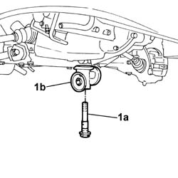

1084B36 ENGINE OIL FILTER AND HEAT EXCHANGER MOUNTING - R.R.
- Path
- Procedures > 10 ENGINE UNIT > 1084 ENGINE LUBRICATION SYSTEM > 1084B ENGINE OIL LUBRICATION CIRCUIT > 1084B36 ENGINE OIL FILTER AND HEAT EXCHANGER MOUNTING - R.R.
- Kind
- repair procedure (removal / refitting; the operation number is the code)
- Applies to
- engines: 2.8 JTD 8V; all production periods
- Interactive page
- https://sloeber94.github.io/elrnDB-fDct/en/#/244000934
Applies to: engines: 2.8 JTD 8V; all production periods
 Removing
Removing
 Refitting
RefittingOp. 7055B54 UNDER-ENGINE GUARD - R R
Op. 1084C10 STAFFA DI SUPPORTO DEL RADIATORE RAFFREDDAMENTO OLIO MOTORE - R.R.
Op. 1084B30 ENGINE OIL FILTER R R
1. Undo the fixing bolt (1a) and remove the support (2b).

Applies to: engines: 2.8 JTD 8V; all production periods
Refitting
Removing- Fit the mounting in place and tighten the fixing bolt checking the torque.
Value - daNm | Fastening | Component | Ø | |
|---|---|---|---|---|
- | 6,5 | Bolt | - | M20x1.5 |
Op. 1084B30 ENGINE OIL FILTER R R
Op. 1084C10 STAFFA DI SUPPORTO DEL RADIATORE RAFFREDDAMENTO OLIO MOTORE - R.R.
Topics linked from this page (4)
- 0010T11 ENGINE OIL CHECK LEVEL AND TOP UP
- 1084B30 ENGINE OIL FILTER R R
- 1084C10 STAFFA DI SUPPORTO DEL RADIATORE RAFFREDDAMENTO OLIO MOTORE - R.R.
- 7055B54 UNDER-ENGINE GUARD - R R